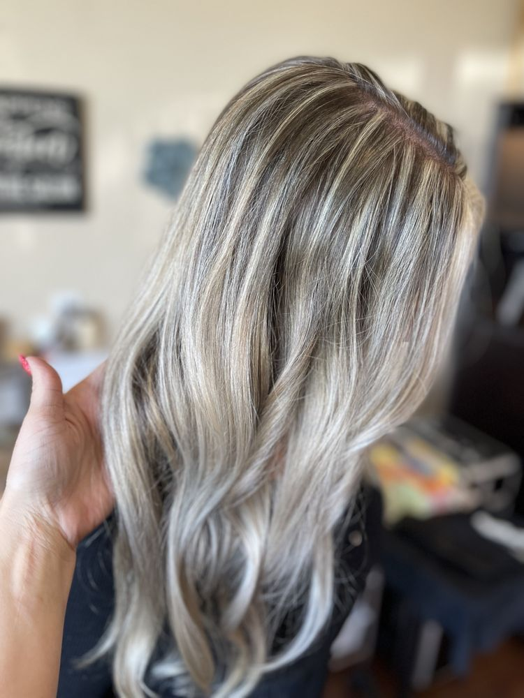

All-over color, root touch-ups, gloss, and color corrections.

Color is where artistry meets chemistry, and we take both seriously. From a quick root refresh to a full color transformation or correction, our colorists pair your goals with formulations that deliver vibrant, long-lasting results while protecting the integrity of your hair.
Every color service starts with a consultation. We assess your current condition, your maintenance preferences, and your inspiration photos before we mix a single bowl.
A root touch-up usually runs 90 minutes to 2 hours. Full color, color corrections, and lightening services can take 3 to 6+ hours depending on starting condition and target. We will give you an accurate time at consultation.
Yes — and we always start with a consultation. Box dye can deposit a lot of pigment, so corrections sometimes need to happen across multiple sessions to keep your hair healthy.
Use sulfate-free, color-safe shampoo and conditioner, wash with cooler water, and protect against heat and UV. We will recommend the right products at your appointment.